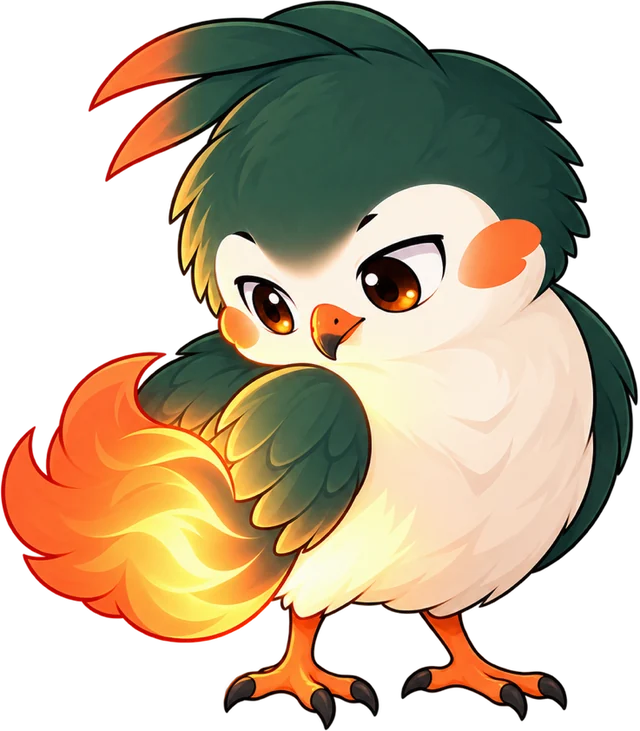
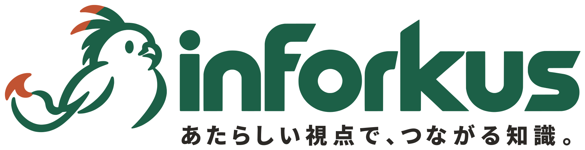
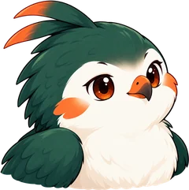
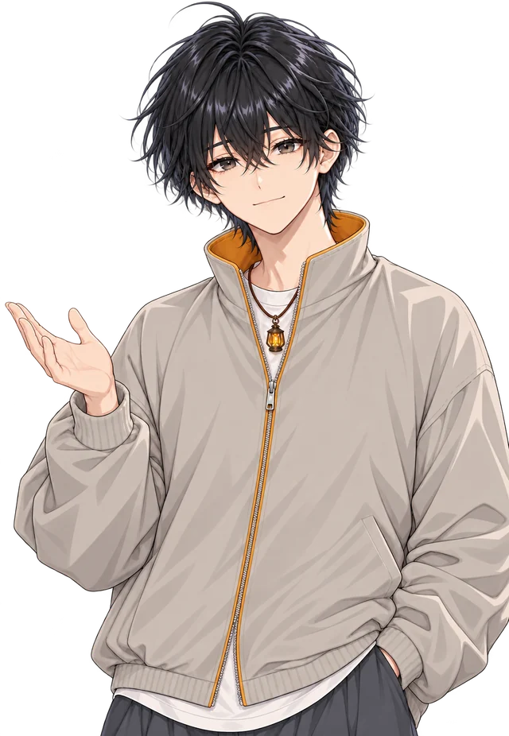
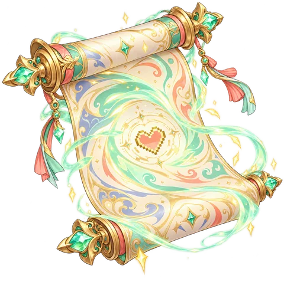
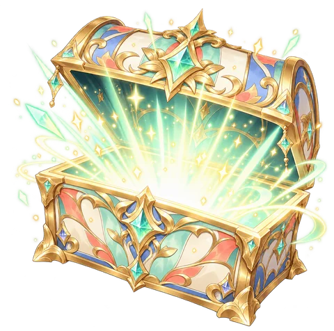
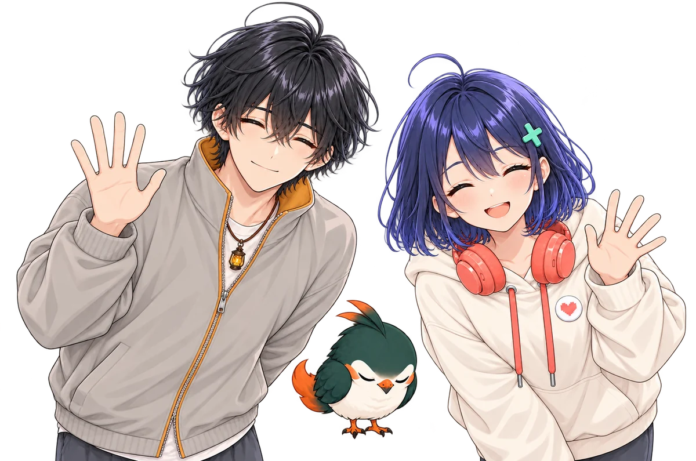

#案内役Lv.12
aoi
見慣れたものの「いつもと違う見方」を、やさしい言葉で案内する。
具体70
ことば90


PRESS START
LEVEL UP!
Lv.1 ▶ Lv.2
新しい見方 を おぼえた！

ver.1.0.0焦点を合わせて核を見つけ、そこから広げて形にする。業務の仕組みづくりと、伝わる図と動画の制作を、inforkus がひとつながりで引き受けます。

トーチ
WHO WE ARE
名前には三つの意味を重ねています。収束して終わらず、発散し続けもしない。その往復から、次の理解やつながりが生まれます。
Focus
焦点を合わせる
散らばった情報から、いま見るべき一点を決める。
Fork us
分かれて、広がる
一点から、別の見方や隣の分野への道を開く。
Info
核となる情報
往復のなかで見つかる大事な情報を、伝わる形にする。
パーティを えらぶ
見慣れたものの「いつもと違う見方」を、やさしい言葉で案内する。

複雑な関係や手順を、図と順番に分けて解きほぐす。
小さな灯火で足もとを照らし、次の一歩へつなぐ。
AI の力で、くり返しの作業を引き受ける。判断は人が持つ。

UPDATE NOTE
ver.1.0.0
一度やれば終わる工程ではなく、捉え直しながら往復する三つの軸。スクロールすると順に解放されます。
Perspective
具体 ⇄ 抽象
現場の具体を知り、全体の構造を捉える。視座を上げ下げして、多方面から見る。
Core
定数 ⇄ 変数
変えてはいけないものと、変えてよいものを見極める。ぶれない核を決めてから、変化に合わせる。
Design
想像 ⇄ 創造
頭の中で描いたものを、相手に伝わる形として創る。図・動き・言葉を組み合わせて届ける。
SERVICE
コマンドを選ぶと、その領域でできることが出てきます。三つ全部を選ぶと…？

手作業スライム が あらわれた！
どうする？
and more…
QUEST LOG
焦点を合わせる（収束）と、広げて考える（発散）を往復しながら進みます。
CONTACT
困っていることや作りたいものを、一言でお送りください。まとまっていなくても大丈夫です。
FOCUS
オンラインで現状と目的を伺い、いちばん効くところに焦点を合わせます。
FORK
仕組みで解くか、図や動画で伝えるか。いくつかの道筋を並べて比べます。
FOCUS
道筋を一つに絞り、内容・進め方・期間・費用をまとめてご提案します。
DESIGN
途中で一度お見せし、方向を合わせながら仕上げます。
LOOP
使って分かったことを持ち寄り、次の改善へつなげます。
CONTACT
気づいたことを形にして渡すと、受け取った人がまた次へつないでくれる。その最初の一歩を、一緒に。
EXP 0 / 100
冒険の準備は できた？
